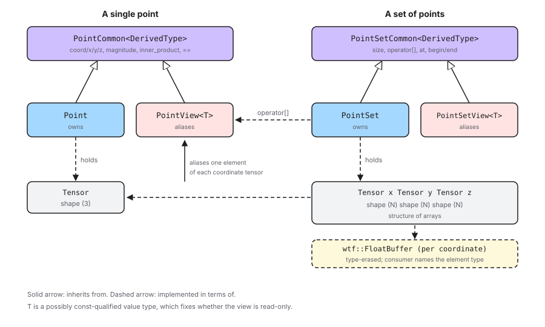

Designing the Point Component
This section contains notes on the design of Chemist’s point component.
What is the Point Component?
A point is a location in three-dimensional Cartesian space. The point component contains the abstractions needed to represent a single point as well as an ordered set of points.
Points are one of the most widely reused abstractions in Chemist. Nuclei, point charges, the centers of Gaussian primitives, and the abscissae of numerical integration grids are all, at their core, a location in space paired with some additional state. Whatever represents that location is therefore replicated throughout the library, and its performance and interoperability characteristics are inherited by every component built on top of it.
Why do we need a separate type?
Three reasons motivate a dedicated abstraction rather than, say, passing three loose floating-point values around.
First, a point is a single conceptual entity. Functions which take a location should take one argument, not three, and should not have to document which ordering of the three they expect.
Second, points are almost never encountered alone. They are encountered in
sets, and the layout of that set — not the layout of any individual point
— is what determines whether downstream code can be vectorized or handed
directly to an external library. A dedicated PointSet abstraction lets us
optimize the layout of the members while still presenting an API which behaves
like a container of points.
Third, the numerical state of a point should participate in the same tensor algebra as the rest of Chemist. Distances, displacements, and inner products involving points appear throughout the library, and expressing them in terms of the same tensor abstraction used elsewhere avoids a parallel, hand-rolled set of numerical routines.
Point Considerations
Topics in this section were considered in designing the point component of Chemist and ultimately were addressed by the design.
- Tensor-backed storage
The numerical state of a point should be stored in a
tensorwrapper::Tensorobject rather than in raw C++ containers.Tensor is Chemist’s standard numerical container. Storing coordinates in one means points compose directly with the density, grid, and operator components without a conversion layer.
Tensor is responsible for its own element type, memory allocation, and distribution. Delegating to it keeps those concerns out of the point component entirely, and means points gain any future capability Tensor acquires (distributed storage, new element types) without a change here.
Arithmetic involving points can then be expressed with Tensor’s own operations rather than reimplemented over loose scalars.
- Performance and layout
Sets of points are consumed by performance-critical code, including external integral libraries which expect coordinates in a specific memory layout.
A set of \(N\) points should store its \(x\), \(y\), and \(z\) coordinates each contiguously, i.e., a structure of arrays, rather than interleaving them per point.
This is the layout integral libraries generally expect, so it can be handed to them without a repacking step.
It is also the layout which vectorizes: an operation applied to every \(x\) coordinate walks contiguous memory.
- Array-of-structures API
The layout in Performance and layout is at odds with how users want to write code. Users think of a set of points as a container of points, and want to ask a set for “the \(i\)-th point” and then ask that point for its \(x\) coordinate.
The API must therefore behave like an array of structures while the implementation remains a structure of arrays.
Asking a set for one of its points must not copy that point’s coordinates out of the set, and writing through the result must modify the set.
- Value vs. view semantics
Following from Array-of-structures API, there are two distinct memory-ownership semantics a point can have: it can own its coordinates, or it can alias coordinates owned by something else.
Both need the same API. Code which computes a distance should not care whether it was handed an owning point or a point aliasing a set.
The aliasing form must be const-correct: a point aliasing read-only state must not permit writing through it.
- Code factorization
Following from Value vs. view semantics, an owning class and an aliasing class with identical APIs invite duplication. Historically each such pair in Chemist has declared, documented, and implemented its API twice.
The shared API should be written once and inherited by both.
The factorization must not cost a virtual call. Points are used in the innermost loops of the library, so the shared implementation must be resolved at compile time.
- Raw data access
Some consumers cannot accept any C++ abstraction and require a pointer to contiguous coordinates.
A set of points must be able to expose a type-erased WTF buffer for each of its three coordinate arrays. Consumers who need an actual pointer recover one from that buffer themselves.
Doing so keeps the floating-point type out of the point component’s API. The consumer already knows which type it wants, and it is the consumer, not the point component, which is obliged to name it.
This is an escape hatch for interoperability, not the primary API.
Out of Scope
Topics in this section were considered, but do not play a role in the current design.
- Non-Cartesian coordinates
Points are Cartesian. Spherical, cylindrical, and internal coordinate systems are not represented.
Conversions to and from other coordinate systems are the responsibility of whichever component needs them.
- Units
A point does not carry units. All of Chemist assumes atomic units, and a point is not the right place to start deviating from that.
- Dimensions other than three
A point is three-dimensional. Chemist has no present need for points in other dimensionalities, and generalizing the class over its dimension would complicate the common case for a hypothetical one.
Point Design

Fig. 3 Classes comprising the point component of Chemist. Dashed arrows denote “is implemented in terms of”; solid arrows denote inheritance.
Fig. 3 shows the classes comprising the point component.
Storage
Point holds a single tensorwrapper::Tensor of shape \((3)\),
addressing Tensor-backed storage. The three elements of that tensor are the
\(x\), \(y\), and \(z\) coordinates, in that order.
PointSet holds three tensorwrapper::Tensor objects, each of shape
\((N)\), holding respectively the \(x\), \(y\), and \(z\)
coordinates of the \(N\) points in the set. This is the structure of
arrays called for by Performance and layout. Note that PointSet is
deliberately not implemented as a container of Point objects, nor as a
single tensor of shape \((N, 3)\): either would interleave the
coordinates and defeat the layout requirement.
Consequently a PointSet does not contain Point objects to hand out,
which is what motivates the view classes below.
Factoring the API
Per Code factorization, the API shared by the owning and aliasing classes is written once in a common base class which is templated on the derived class, i.e., the curiously recurring template pattern (CRTP). The base class implements the API by asking the derived class for access to its coordinates; because the derived class is a template parameter, that request is resolved at compile time and no virtual dispatch is involved.
PointCommon<DerivedType> implements everything which can be expressed in
terms of “give me coordinate \(q\)”:
coord(q),x(),y(),z()and their read-only overloads,magnitude(),inner_product(rhs), and the comparison operators.
Point and PointView each derive from PointCommon and supply only
what differs between them: how the coordinates are stored or reached, and the
constructors. Point owns a tensor; PointView aliases coordinates
belonging to something else.
The same factorization applies to the set classes, with
PointSetCommon<DerivedType> implementing the container API shared by
PointSet and PointSetView.
Views
PointView<PointType> addresses Value vs. view semantics. It is templated on
a possibly const-qualified point type, so that PointView<Point>
aliases mutable coordinates and PointView<const Point> aliases read-only
ones. The const-correctness of the resulting references is derived from that
template parameter using the traits machinery described in
Understanding the Traits Component, following the conventions laid out in
Creating a New View.
PointView is what makes the array-of-structures API of
Array-of-structures API possible on top of a structure-of-arrays
implementation. Indexing a PointSet returns a PointView which aliases
one element of each of the set’s three coordinate tensors. The view behaves
like a point — it has the same API, inherited from the same
PointCommon — but writing through it writes into the set.
A PointView can be converted to an owning Point when a copy really is
wanted, and a mutable view converts implicitly to a read-only view.
Mathematical operations
Operations on points are implemented by delegating to the tensor which backs them, per Tensor-backed storage.
inner_product is a full contraction of the two coordinate tensors,
expressed with Tensor’s index-based domain-specific language. magnitude
is the square root of a point’s inner product with itself. Displacements are
tensor subtraction. In each case the point component describes what to
compute and Tensor decides how, including which floating-point type the
arithmetic is actually carried out in.
Raw data access
PointSet exposes a WTF buffer for each of its three coordinate arrays,
addressing Raw data access. These buffers are the same type-erased
buffers the backing tensors already store their elements in, so exposing one
is a matter of handing out a reference, not of converting or repacking
anything.
The buffer is type-erased: it knows which floating-point type it holds, but that type is not part of its C++ type. A consumer which genuinely needs a pointer names the element type at that point, either by asking the buffer to be cast to a span of a concrete type, or by visiting it with a callable which is instantiated for whichever type the buffer turned out to hold. The latter is preferable when the consumer can be written generically, since it cannot guess wrong.
Two consequences are worth noting. First, the point component itself never names a floating-point type; the obligation to do so belongs to the consumer which has the requirement. Second, a pointer obtained this way is only valid while the set’s storage is unchanged, and only when the underlying buffer is actually contiguous — which the buffer can be asked about.
Summary
- Tensor-backed storage
Pointstores a shape \((3)\) tensor andPointSetstores three shape \((N)\) tensors, so all numerical state lives in Tensor and all arithmetic is delegated to it.- Performance and layout
PointSetstores each Cartesian direction in its own contiguous tensor, giving a structure-of-arrays layout.- Array-of-structures API
Indexing a
PointSetyields aPointViewaliasing one element of each coordinate tensor, so the container behaves like an array of structures.- Value vs. view semantics
The
Point/PointViewandPointSet/PointSetViewpairs supply owning and aliasing semantics respectively, with the view classes templated on a possiblyconst-qualified type to control mutability.- Code factorization
PointCommonandPointSetCommonimplement the shared APIs once using CRTP, so the owning and aliasing classes do not duplicate them and no virtual dispatch is introduced.- Raw data access
PointSethands out the type-erased WTF buffer backing each of its three coordinate arrays. Consumers needing a raw pointer recover one from that buffer, which keeps the floating-point type out of the point component’s API entirely.